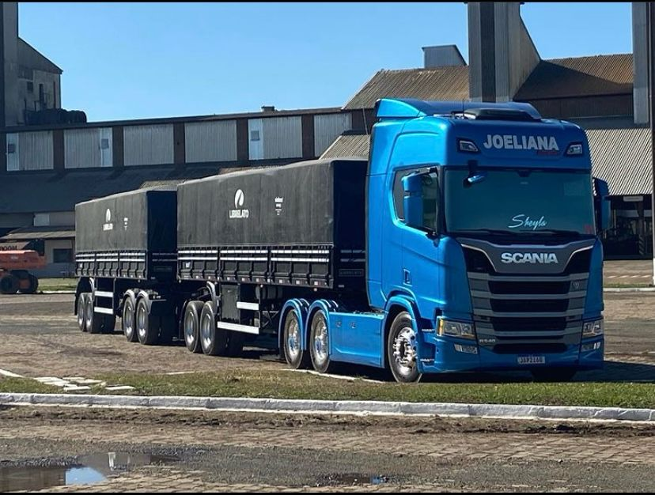
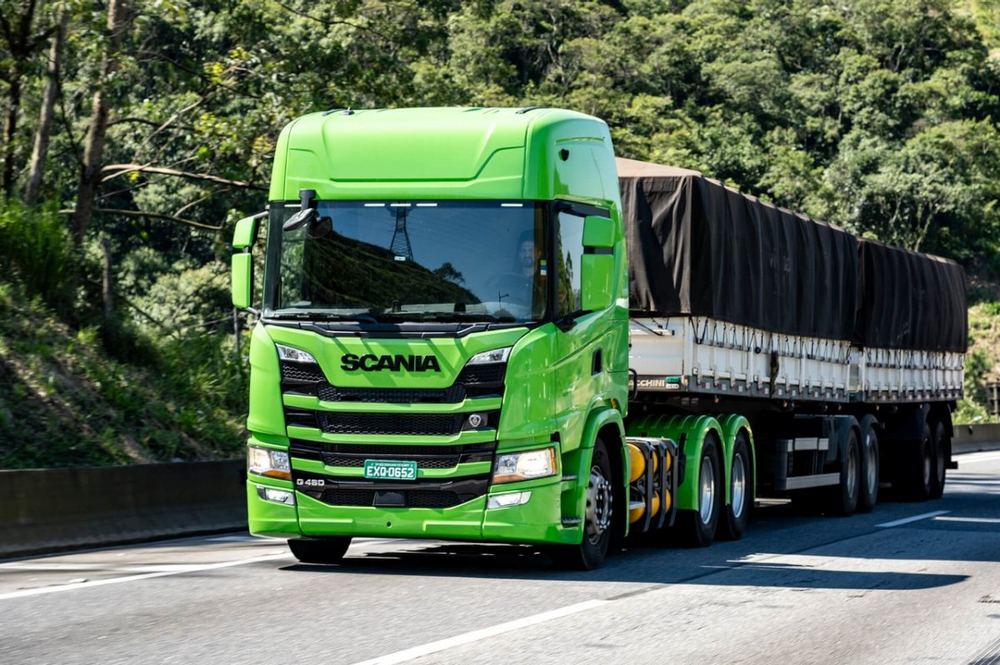

Scania Joeliana – A Máquina Que Movimenta Estradas e Emoções
No mundo do transporte rodoviário, poucos caminhões se destacam tanto quanto o Scania Joeliana...
Galeria de Imagens
 
Compartilhe!
📤 Compartilhar no Facebook